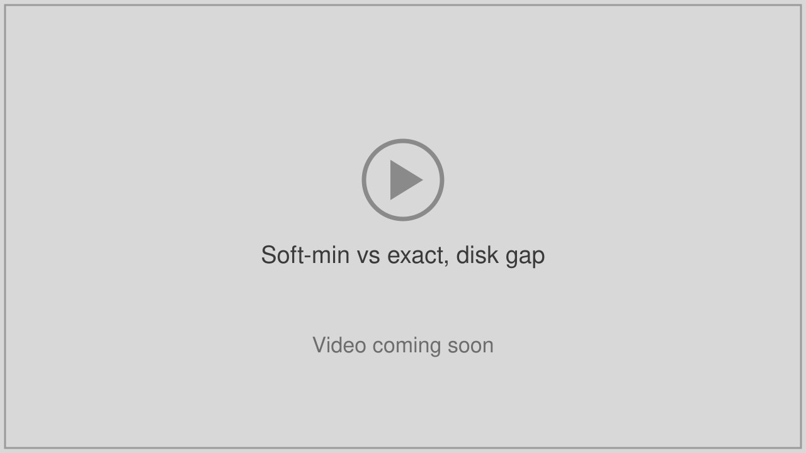
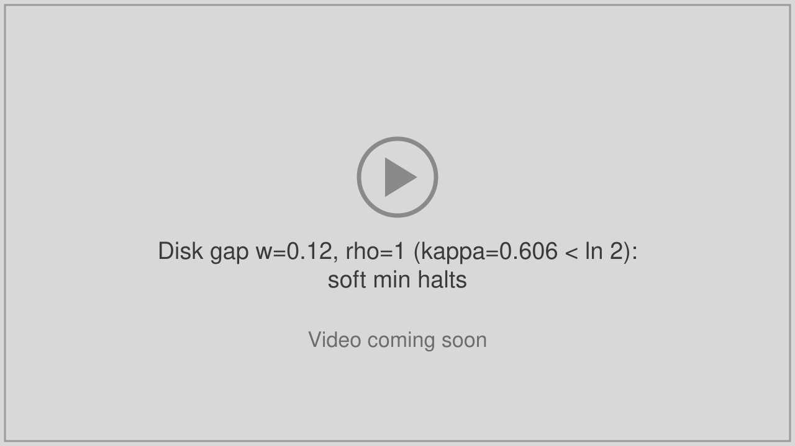
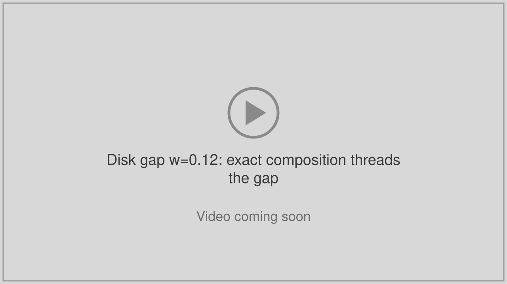
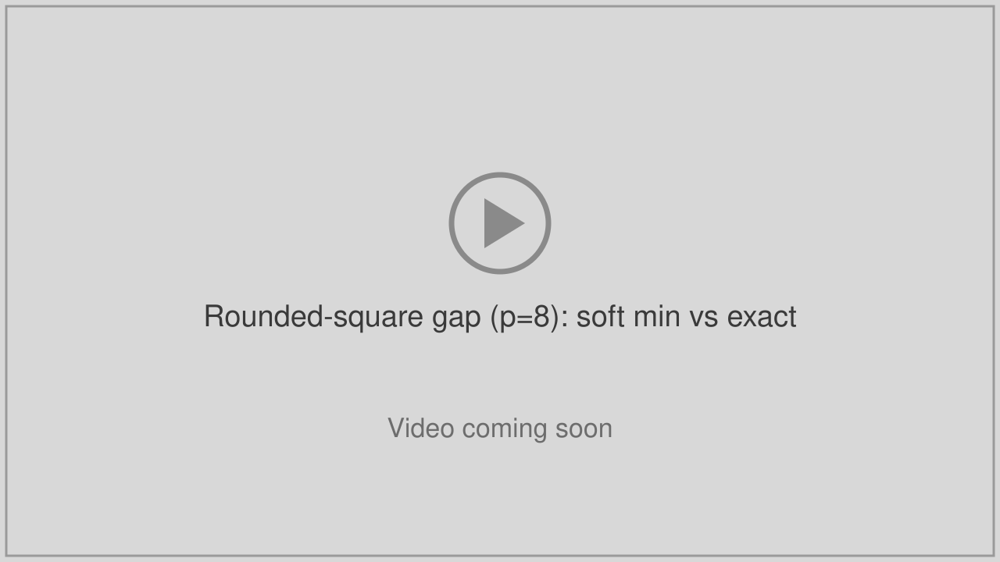
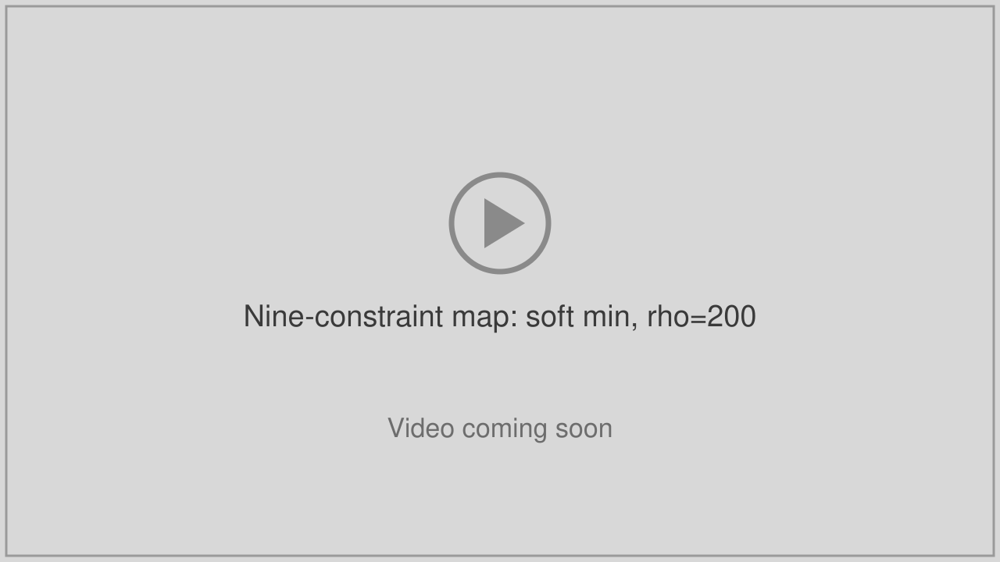
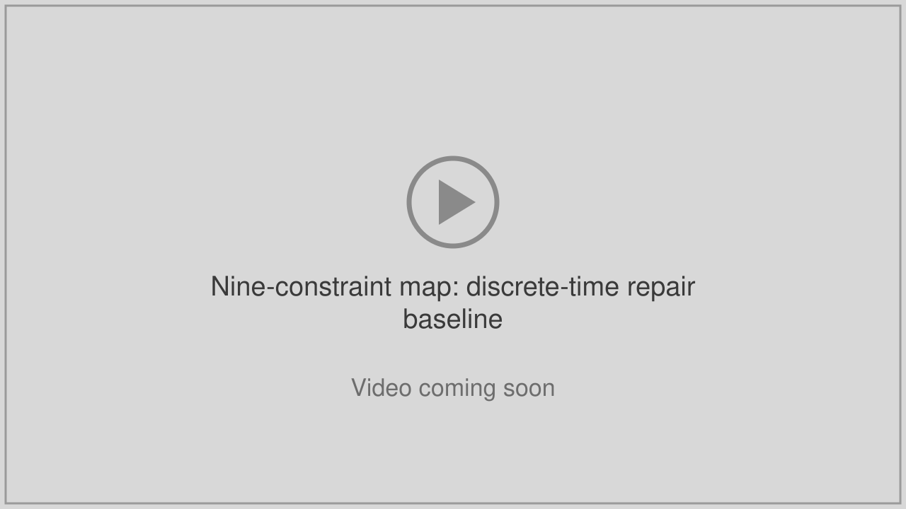

Composing Exact Barriers Inside an MPPI Planner
Alex Coker and Leilei Cui
Department of Mechanical Engineering, University of New Mexico
Code on GitHub

Soft-min vs exact, disk gap

Disk gap w=0.12, ρ=1 (κ=0.606 < ln 2): soft min halts

Disk gap w=0.12: exact composition threads the gap

Rounded-square gap (p=8): soft min vs exact
Nine-constraint map: Exact-Safe MPPI

Nine-constraint map: soft min, ρ=200

Nine-constraint map: discrete-time repair baseline
Single most-active constraint (k_max=1): chattering